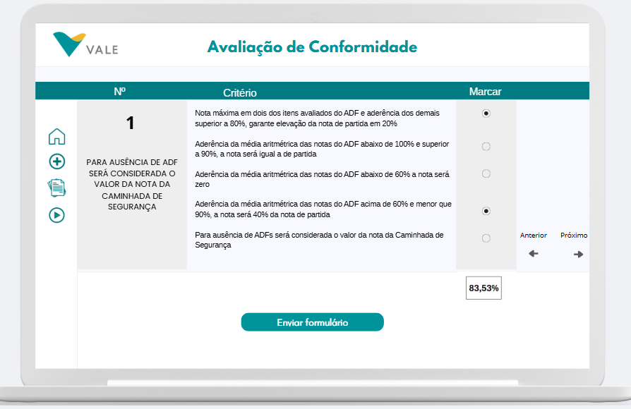
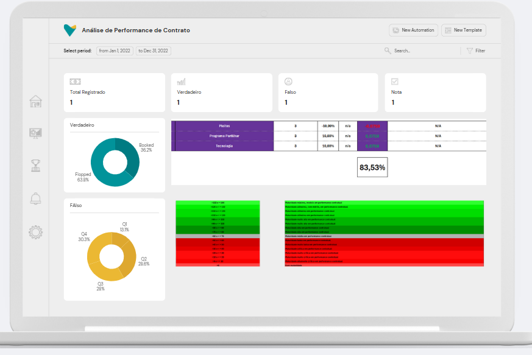
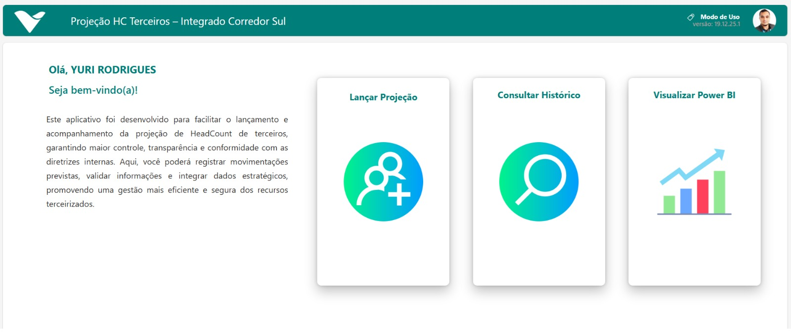
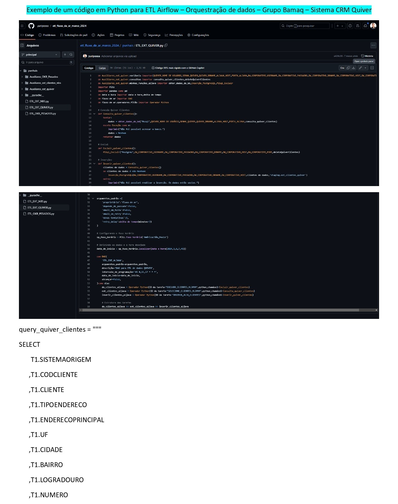
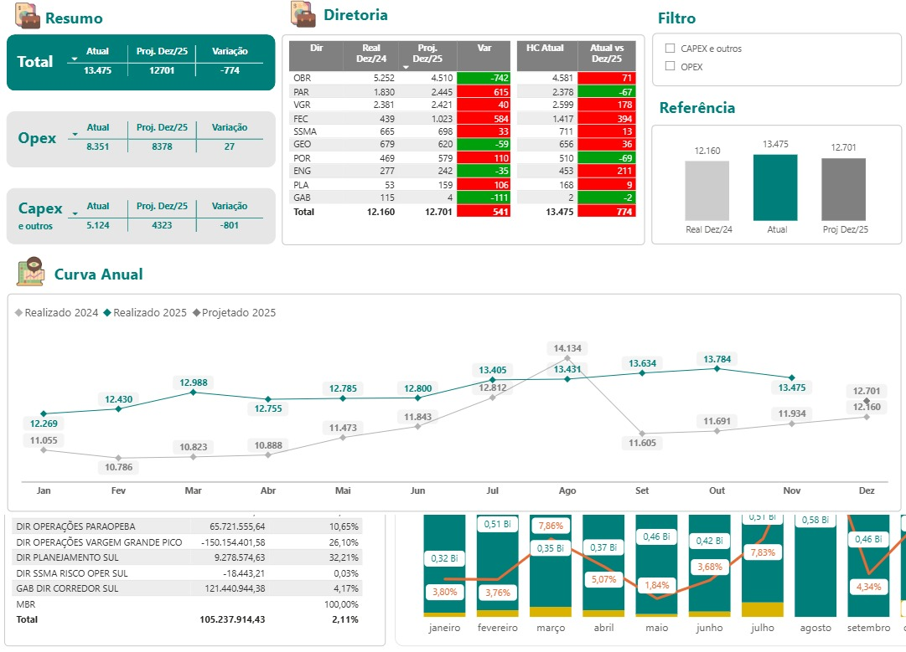

GABRYEL JÚNIO COSTA TEIXEIRA
Sou formado em Ciência da Computação, com experiência em tecnologia, comunicação institucional e suporte técnico. Atuei na Prefeitura Municipal de Esmeraldas como Supervisor de Programas Especiais II, participando da implementação de projetos, organização de dados e suporte a sistemas administrativos.
Possuo conhecimentos em desenvolvimento web, análise de dados, automação de processos e atendimento ao usuário, sempre com foco em soluções eficientes e na melhoria da experiência do usuário.
📞 (31) 99401-5144 · (31) 99395-1687
Supervisor de Programas Especiais II
Período: 26/09/2023 – 07/07/2025
Atuação na implementação de projetos e estratégias de comunicação, elaboração e edição de materiais, coleta e manutenção de bancos de dados, comunicação com diferentes públicos e suporte a sistemas.
PREFEITURA MUNICIPAL DE ESMERALDAS – MG
Estágio – Assistente de Comunicação
Período: 24/10/2022 – 25/09/2023
Apoio à comunicação institucional, elaboração de materiais e textos, coleta e gestão de bancos de dados.
INFOSILAS SERVIÇO E COMÉRCIO DE INFORMÁTICA E CFTV
Estágio – Assistente Técnico de Informática
Período: 11/07/2022 – 21/10/2022
Atendimento a chamados de suporte, manutenção e configuração de hardware e software, treinamento de usuários.
Bacharelado em Ciência da Computação
Instituição: Centro Universitário UNA – Betim
Conclusão: Julho de 2025
• JavaScript – Desenvolvimento com projetos práticos
• Git e GitHub – Versionamento de código
• Excel Avançado, VBA e Power BI
• DAX – Criação de KPIs e medidas personalizadas
• Banco de Dados e SQL (em andamento)
• Power Apps e Power Automate
• Suporte Técnico e Atendimento ao Usuário
• Metodologias Ágeis – Scrum e Kanban
Desenvolvimento de projetos acadêmicos e pessoais em Análise de Dados, envolvendo coleta, tratamento, análise e visualização de dados, com o objetivo de apoiar a tomada de decisões e a melhoria de processos.




